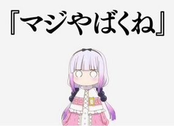
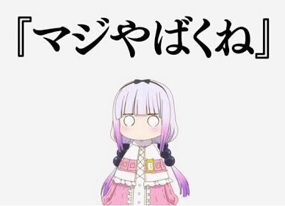

- 可附加圖檔類型：GIF, JPG, JPEG, PNG, WEBM，瀏覽器才能正常附加圖檔
- 附加圖檔最大上傳資料量為 5120 KB。
- 當檔案超過寬 250 像素、高 250 像素時會自動縮小尺寸顯示
- AA可使用 [aa][/aa] 防止變形
- 投稿時請點擊畫像認證後，再按下 [送出] 按鈕提交。
- 鬧板、攻擊性發言、煽動性發言請無視（回應者也無視），並使用del或在貓管理部向管理員回報。
- 可附加圖檔類型：GIF, JPG, JPEG, PNG, WEBM，瀏覽器才能正常附加圖檔
- 附加圖檔最大上傳資料量為 5120 KB。
- 當檔案超過寬 250 像素、高 250 像素時會自動縮小尺寸顯示
- AA可使用 [aa][/aa] 防止變形
- 投稿時請點擊畫像認證後，再按下 [送出] 按鈕提交。
- 鬧板、攻擊性發言、煽動性發言請無視（回應者也無視），並使用del或在貓管理部向管理員回報。
- HTML
- 超文本標記語言
 

蟲匯聚之所
常用標籤